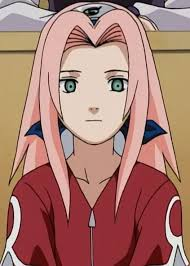
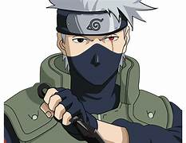
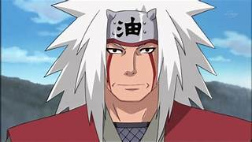
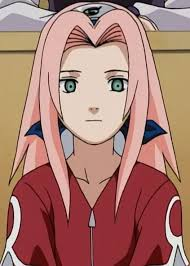
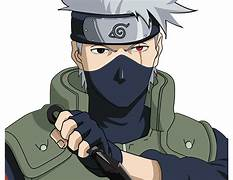
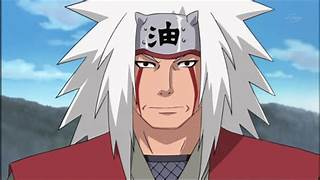

POPULA HEROS
 





POPULA VILANS
Naruto is a Japanese manga series written and illustrated by Masashi Kishimoto. It tells the story of Naruto Uzumaki, a young ninja who seeks recognition from his peers and dreams of becoming the Hokage, the leader of his village. The story is told in two parts—the first set in Naruto's pre-teen years, and the second in his teens. The series is based on two one-shot manga by Kishimoto: Karakuri (1995), which earned Kishimoto an honorable mention in Shueisha's monthly Hop Step Award the following year, and Naruto (1997). Naruto was serialized in Shueisha's shōnen manga magazine Weekly Shōnen Jump from 1999 to 2014, with its chapters collected in 72 tankōbon volumes. The manga was adapted into an anime television series produced by Pierrot and Aniplex, which broadcast 220 episodes from 2002 to 2007; the English dub of the series aired on Cartoon Network and YTV from 2005 to 2009. Naruto: Shippuden, a sequel to the original series, premiered in 2007, and ended in 2017, after 500 episodes. The English dub was broadcast on Disney XD from 2009 to 2011, airing the first 98 episodes, and then switched over to Adult Swim's Toonami programming block in January 2014, starting over from the first episode. Viz Media began streaming the anime series on their streaming service Neon Alley in December 2012 on 99 episodes, and ended in March 2016, after 338 episodes. Besides the anime series, Pierrot has developed eleven movies and twelve original video animations (OVAs). Other Naruto-related merchandise includes light novels, video games, and trading cards developed by several companies. Viz Media licensed the manga and anime for North American production and serialized Naruto in their digital Weekly Shonen Jump magazine. The anime series began airing in the United States and Canada in 2005, and in the United Kingdom and Australia in 2006 and 2007, respectively. The films and most OVAs from the series were also released by Viz, with the first film premiering in movie theaters. The story of Naruto continues with Naruto's son, Boruto Uzumaki, in Boruto: Naruto Next Generations: Boruto wishes to create his own ninja way instead of following his father's. Naruto is one of the best-selling manga series in history having 250 million copies in circulation worldwide in 47 countries and regions, with 153 million copies in Japan alone and remaining 97 million copies elsewhere. It has become one of Viz Media's best-selling manga series; their English translations of the volumes have appeared on USA Today and The New York Times bestseller list several times, and the seventh volume won a Quill Award in 2006. Reviewers praised the manga's character development, strong storylines, and well-executed action sequences, though some felt the latter slowed the story down. Critics noted that the manga, which has a coming-of-age theme, makes use of cultural references from Japanese mythology and Confucianism.
NARUTO
Naruto Uzumaki (Japanese: うずまき ナルト, Hepburn: Uzumaki Naruto) (/ˈnɑːrətoʊ/) is the titular protagonist of the manga Naruto, created by Masashi Kishimoto. As the series progresses, he is a young ninja from the fictional village of Konohagakure (Hidden Leaf Village). The villagers ridicule and ostracize Naruto on account of the Nine-Tailed Demon Fox—a malevolent creature that attacked Konohagakure—that was sealed away in Naruto's body. Despite this, he aspires to become his village's leader, the Hokage, in order to receive their approval. His carefree, optimistic, and boisterous personality enables him to befriend other Konohagakure ninja, as well as ninja from other villages. Naruto appears in the series' films and in other media related to the franchise, including video games and original video animations (OVA), as well as the sequel Boruto: Naruto Next Generations, where he is the Hokage, and his son, Boruto Uzumaki, is the protagonist.
SAKURA
Sakura Haruno (Japanese: 春野 サクラ, Hepburn: Haruno Sakura) is a fictional character in the Naruto manga and anime series created by Masashi Kishimoto. Sakura is depicted as a kunoichi affiliated with Konohagakure (木ノ葉隠れの里, English version: "Hidden Leaf Village") and a part of Team 7, which consists of herself, Naruto Uzumaki, Sasuke Uchiha, and their sensei Kakashi Hatake. Besides the main series, Sakura has appeared in several pieces of the Naruto media, most notably the spin-off Naruto: The Seventh Hokage and the Scarlet Spring (2015) and the sequel Boruto: Naruto Next Generations (2016) where she married Sasuke Uchiha taking name of Sakura Uchiha (Japanese: うちは サクラ, Hepburn: Uchiha Sakura) and is the mother of their daughter, Sarada Uchiha
KAKASHI
Kakashi Hatake (Japanese: はたけ カカシ, Hepburn: Hatake Kakashi) is a fictional character and one of the main protagonists in the Naruto manga and anime series created by Masashi Kishimoto. In the story, Kakashi is the teacher of Team 7, consisting of the series' primary characters, Naruto Uzumaki, Sasuke Uchiha, and Sakura Haruno. Kakashi's past has been extensively explored in the series, resulting in a gaiden being devoted to his past experiences. Kakashi has appeared in several pieces of Naruto media, the featured films in the series, the original video animations, and the video games.
JARAIYA
Jiraiya (自来也) is a fictional character in the Naruto manga and anime series created by Masashi Kishimoto. Introduced in the series' first part, he was a student of Third Hokage Hiruzen Sarutobi and one of the three "Legendary Great Three Students of the God Shinobi"—along with Orochimaru and Lady Tsunade, his former teammates. Jiraiya appears as a perverted old man who occasionally returns to the village Konohagakure, reporting the activities of Orochimaru and the organization Akatsuki. Referred to as the "Toad Sage" and "Pervy Sage", he mentors Fourth Hokage Minato Namikaze and later becomes the godfather and mentor of Minato's son, Naruto Uzumaki.
Momoshiki Otsutsuki
Momoshiki Otsutsuki (Japanese: 大筒木 モモシキ, Hepburn: Ōtsutsuki Momoshiki) is a fictional character, first introduced in Pierrot's 2015 anime film, Boruto: Naruto the Movie which acts as a sequel to Masashi Kishimoto's manga Naruto. A descendant of Otsutsuki and the series' villain Kaguya, Momoshiki appears in the film as the antagonist, searching to plant a Divine Tree in the world by absorbing the energy possessed by ninjas, the chakra, most notably one of the protagonists, Naruto Uzumaki. While in the film, Momoshiki is killed by the combined forces between Naruto and his son, Boruto, he plays a bigger role in the retelling of the movie, the manga and anime series Boruto: Naruto Next Generations; in his last moments Momoshiki places a cursed seal inside Boruto so that he will gradually revive through the child's body.
Madara Uchiha
Madara Uchiha (Japanese: うちは マダラ, Hepburn: Uchiha Madara) is a main antagonist manga and anime character in the Naruto series created by Masashi Kishimoto. He appears for the first time in "Part II" of the manga and the Shippuden anime adaptation, as a major antagonist. He, along with its first Hokage Hashirama Senju, is one of the co-founders of Konohagakure (Japanese: 木ノ葉隠れの里, Hepburn: Konohagakure no Sato) village from the ninja world. Their power conflict over how to run the village, as well as the long-term feud between clans, leads to Madara's death. However, it is revealed later that Madara had used a man named Obito Uchiha as his agent. He transplants his Rinnegan (輪廻眼, lit. "Saṃsāra Eye") eye power into a child named Nagato, a member of the terrorist organization Akatsuki, to be preserved for his eventual revival years later. During most of the series, Obito uses Madara's name until a criminal named Kabuto Yakushi reanimates the real Madara who becomes one of the primary antagonists alongside Obito Uchiha during the Fourth Great Shinobi World War storyline. Madara has appeared in several pieces of Naruto media, including a Boruto feature film. Many Naruto video games have featured him as a playable character.
Itachi Uchiha
Itachi Uchiha (うちは イタチ, Uchiha Itachi) is a character in the Naruto manga and anime series created by Masashi Kishimoto. Itachi is the older brother of Sasuke Uchiha, and is responsible for killing all the members of their clan, sparing only Sasuke. He appears working as a terrorist from the organisation Akatsuki and serves as Sasuke's greatest enemy. During the second part of the manga, Itachi becomes involved in attacks to ninjas possessing tailed-beast creatures until facing Sasuke in a one-on-one battle. Although Itachi perishes during the final duel, it is later revealed that Itachi had a secret reason for assassinating the Uchiha clan. Itachi is a playable character in most of the video games from the series.
Nagato
Nagato (Japanese: 長門), known primarily under the alias of Pain (ペイン, Pein), is a fictional character in the manga and anime series Naruto created by Masashi Kishimoto. Nagato is the figurehead leader of the Akatsuki who wishes to capture the tailed beasts sealed into various people around the shinobi world. After acquiring and sealing most of the beasts within a Gedo statue, Nagato's advisor advises him to capture the Nine-Tailed Demon Fox sealed inside the series' protagonist, Naruto Uzumaki (whom he turns out to be related to). Before leaving to capture Naruto, Nagato engages in a mortal battle with his former mentor, Jiraiya. His past as a war orphan, and his loss of his best friend are explored. Due to his traumatic experiences, which stemmed from human conflict, Nagato aims to create a new world, free from the chaos of war. Nagato also appears in the series' video games.